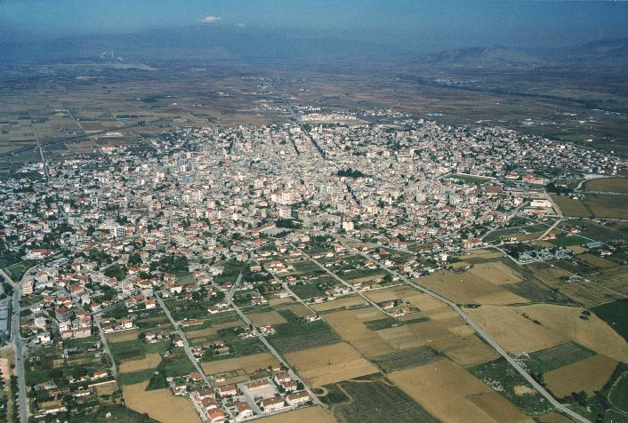
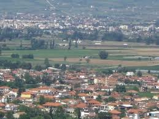
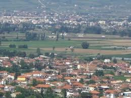

Αρχική
Τα μέλη της P.E. © Corp:
- Πασχάλης Πολυχρονιάδης(4171)
- - Ο Πασχάλης κατέχει αρκετά καλά τις γνώσεις προγραμματισμού.
Κατάγεται απο την Πτολεμαίδα και κατοικεί στην καβάλα

- Θανάσης Καρυοφυλλίδης (4120)
- - Ο Θανάσης κατέχει και αυτός βασικές γνώσεις στις γλώσσες προγραμματισμού.Είναι ο καλύτερος στην java και στην c++.
Κατάγεται απο το Καβαλλάρι Λαγκαδά και κατοικεί στην Καβάλα
 
